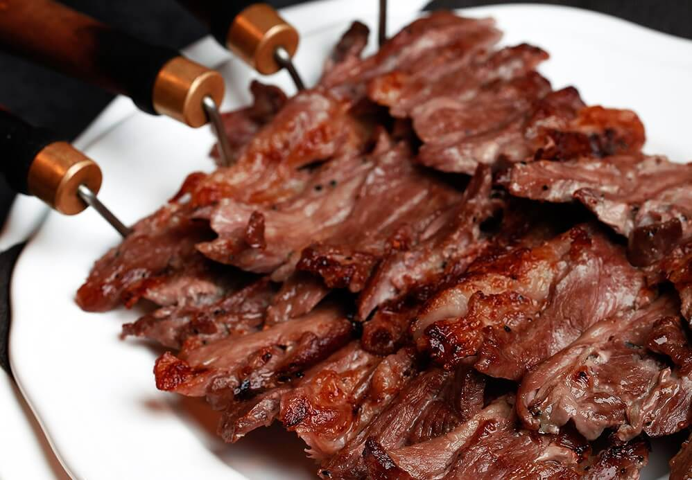

The Famous Turkish Dish: Cag Kebab

Cuisine:Turkish Prep | Time:20 Minutes | Resting Time: 1 day
Servings: 4 | Calories:213 kcal | Cook Times:1 hour 30 minutes
Ingredients
- 500 gr Boneless Lamb Rib cleaned, palm size cut with finger thick
- 500 gr Boneless Leg of Lamb cleaned, palm-size cut with finger-thick
- 3 Onions Sliced Cut
- 1/2 tbsp Fresh Ground Black Pepper
- 1 tbsp Rock Salt
Instructions
- Place the meats to the deep oven tray.
- Squeeze the sliced onions within your palms to remove the onion juice. (If you put sliced onions without squeezing, it lefts its bitter juice into the meat while resting)
- Spread the squeezed sliced onions on top of the meats evenly..
- Spread the freshly grounded pepper on top of the meats evenly.
- Spread the rock salt on top of the meats evenly.
- Mix the meat with the ingredients very well with your hand and put a stretch film on top the tray than put it into the refrigerator to rest it overnight.
- The next day, stack the meats to the adjustable grill rotisserie skewer and squeeze the meats very well.
- Place the fire wood to your BBQ and fire it up. Let the wood burn until it reaches its maximum heat.
- According to your BBQ set up, place the adjustable rotisserie skewer either in front of the heat or the top of the heat. Don't forget to give enough space between the heat and the meat.
- Hit the start button of the automatic turning rotisserie to start roasting the meat.
- Roast the stacked meat until all sides turn from flesh color to brown color.
- After the top of the stacked meat roasted, stick a skewer from the left part of the stacked meat through the right side of the stacked meat by the depth of 3cm (left to right direction). And then start cutting the roasted layer of the meat by starting from the end of the skewer which you stick through the handle of the skewer (cutting from right to left direction).
- Once you trim the roasted top layer of the meat, place the skewer to the BBQ’s wire rack to roast the bottom part of the meat.
- Continue the same cutting and roasting process until all meat finishes on the rotisserie.
- Serve.
Where to Eat?
If you are going to visit Erzurum city, I suggest you stop by Gel-Gör Cağ Kebap restaurant.
It is one of the best in the city. If you are going to visit Istanbul and give a shot
at this taste, I suggest you stop by Şehzade Cağ Kebab restaurant.